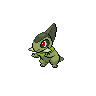

📖 英語版の図鑑説明
They play with each other by knocking their large tusks together. Their tusks break sometimes, but they grow back so quickly that it isn’t a concern.
日本語訳
大きな牙をぶつけ合って遊ぶ。牙は折れてもすぐに生え変わる。
📝 この図鑑文に出てくる英単語
| 英単語 | 意味 | 品詞 | レベル |
|---|---|---|---|
| knocking | たたいている | 動詞 | 高校 |
| tusks | きば(複数形) | 名詞 | 大学 |
| together | いっしょに | 副詞 | 中1 |
| break | こわす | 動詞 | 中2 |
| quickly | すばやく | 副詞 | 中2 |
| concern | 心配 | 名詞 | 高校 |
文法ポイント so quickly that 〜 は「とてもquicklyなので〜」という意味。so のあとの形容詞や副詞が理由、that 以下が結果を表します。
by knocking は「by + 動詞のing形」で「〜することによって」と手段を表します。
💡 英語名「Axew」の由来
英語名「Axew」は、axe（斧）、chew（かむ）とhew（たたき切る）を組み合わせた名前と考えられている。フランス語の名前は「Coupenotte」で、couper（切る）、quenotte（乳歯）から作られている。
出典 Bulbapedia
📊 キバゴの種族値
HP46
こうげき87
ぼうぎょ60
とくこう30
とくぼう40
すばやさ57
合計 320
❓ よくある質問
- キバゴの英語名は？
- キバゴの英語名は「Axew」です。
- キバゴの英語名「Axew」の由来は？
- 英語名「Axew」は、axe（斧）、chew（かむ）とhew（たたき切る）を組み合わせた名前と考えられている。フランス語の名前は「Coupenotte」で、couper（切る）、quenotte（乳歯）から作られている。
- キバゴは英語版の図鑑でどう説明されている？
- 「They play with each other by knocking their large tusks together. Their tusks break sometimes, but they grow back so quickly that it isn’t a concern.」と書かれています。日本語にすると「大きな牙をぶつけ合って遊ぶ。牙は折れてもすぐに生え変わる。」という意味です。
キバゴは第5世代（イッシュ地方）のポケモンです。第5世代（イッシュ地方）の英語名一覧 →